Week 4 · Marketing engine + content system
A homepage that argues instead of decorates, a public marketing page with the brand, the persona and the launch content, and an A/B test on the headline that counts people — not reloads, not tests, not robots.
| Category | Pts | Evidence | § |
|---|---|---|---|
| Build discipline before coding | 1.5 | Packet committed at 13:26 (660dc07); first code at 13:31 (060c841). Four brand decisions made by me first | 2 |
| UX planning and image-generated mockup | 1.0 | Wireframe with implementation notes, scope cut, and what changed from the drawing to the live page | 3 |
| Product spec and acceptance criteria | 1.0 | 13 requirements, each with a checkable criterion | 4 |
| Architecture and tech stack clarity | 1.0 | Data flow, why the A/B variant is not assigned where the session lives, and the four filters on what counts as a visitor | 5 |
| Working deployed product | 2.0 | closetai.lat and /marketing live; end-to-end tests pass against the real site, confirmed by the URL each run prints | 6–7, 12 |
| Coding/build evidence | 1.0 | [PENDING: n] commits (min. 5) · [PENDING: n] deployments (min. 2) · 6 coding-agent prompts (min. 5) | 8–11 |
| Testing and iteration | 1.0 | 2 A/B tests required, written as 9 cases · 3 software tests required, 6 written against the real site · 8 iterations documented | 12–13 |
| Human judgment and explanation | 1.0 | Four brand decisions; one post rejected before approval; three corrections, one of them about my own earlier weeks; decision note, 213 words | 2, 13–15, 17 |
| Demo clarity | 0.5 | 2:32 walkthrough recorded against production [PENDING: my narration] | 16 |
| Required | Where it is |
|---|---|
| Homepage upgraded | closetai.lat — seven sections in argument order (§6) |
| Brand system | /marketing — colors with hex codes, fonts, voice do's and don'ts, the known brand risk |
| Target persona | Sofía, 27, Mexico City — each trait marked data (with source) or hypothesis |
| Landing page copy | Live on the homepage, and on /marketing with a copy button |
| 10 social posts | 7 Instagram, 3 TikTok — stored in marketing_assets, approved by me |
| 3 video scripts | Shot by shot: what you see, on-screen text, voice |
| 14-day campaign calendar | 11 publishing days and 3 rest days to read results; exports to CSV |
| A/B headline test | Running live on the homepage; results on /marketing |
| Saved marketing assets | 28 approved pieces in the database, plus the generator's saved posts |
| Upgrade homepage · create /marketing · content cards · A/B tester · copy/export buttons · save assets | All live, all tested against the real site |
| 2 A/B tests + 3 software tests | 9 A/B cases and 6 software tests (§12) |
Full text in docs/WEEK-4-PACKET.md, committed five minutes before the first
code commit.
The agent added one rule nobody asked for: do not use the Week 2 interview quote in social media. My mother's consent was for the research page and the document, not for advertising.
The old homepage said a nice phrase and little else: a visitor could not tell in ten seconds what problem it solves, what it costs, or why to believe it — and nothing built in three weeks, the sourced research, the pricing, the privacy work, appeared on it. ClosetAI also had nothing to go out and find anyone with: no written voice, no persona, not one post. And its headline had been chosen by taste, never measured.
| Left out | Why |
|---|---|
| Publishing to Instagram and TikTok from the page | Business accounts and API review; the copy button solves it this week |
| Generated images for the posts | Image generation has no free tier, and billing is not active |
| Editing content from the page | I approve the text; a public editor would be a way around that |
| Declaring an A/B winner this week | Current traffic will not reach a sufficient sample; the method is published, not a fake winner |
| Third-party analytics | A table of my own counts views and clicks without sending anyone's data to another company |
Touching proxy.ts to assign the variant | That is where the session lives, and it broke once in production |
Image generation is still unavailable without billing, so — as in Week 3 — the UX concept is the wireframe, drawn before the build with its implementation notes inside.
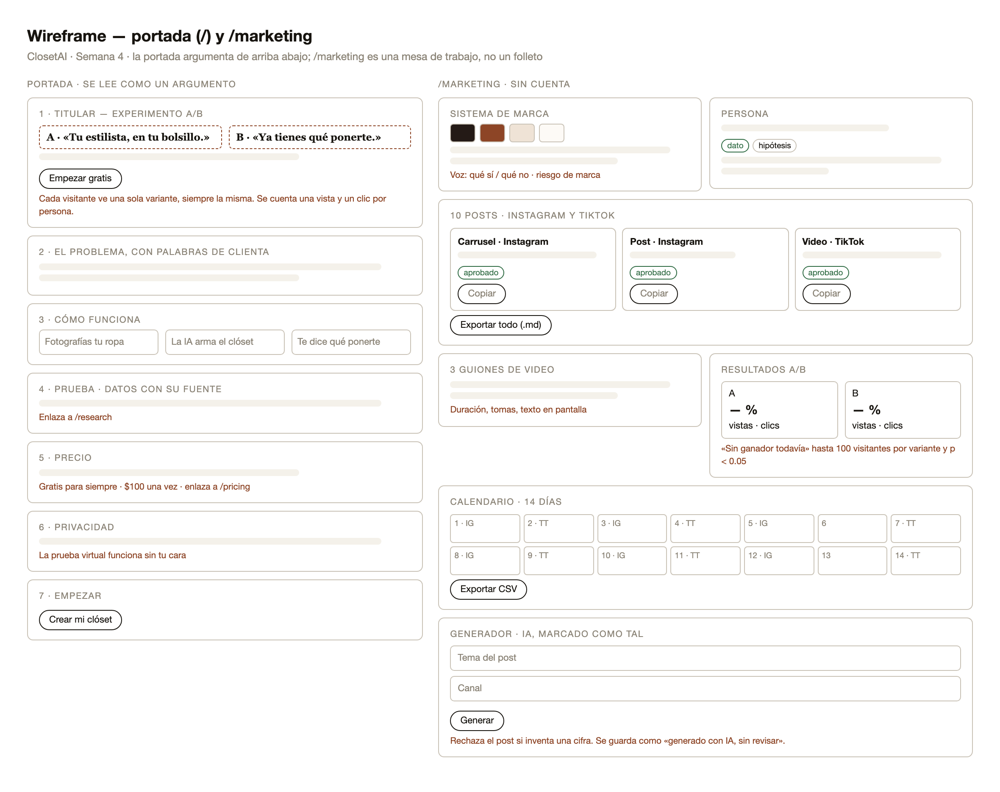
/marketing as a
workbench — every piece in a card with its channel, its status and its copy and export buttons.| # | Requirement | Acceptance criterion | Status |
|---|---|---|---|
| 1 | Homepage upgraded | Headline, problem, how it works (3 steps), sourced proof, price, privacy, start — in that order | ● done |
| 2 | A/B headline | Each visitor sees one variant, the same one on reload | ● done |
| 3 | Honest measurement | One view and one click per visitor, not per reload; test traffic is not counted | ● done |
| 4 | Public page | GET /marketing returns 200 with no session | ● done |
| 5 | Brand system | Name, colors with codes, fonts, voice, known brand risk | ● done |
| 6 | Persona | Each trait marked data (with source) or hypothesis | ● done |
| 7 | Landing copy | The homepage text, with a copy button | ● done |
| 8 | 10 posts | 10 cards with channel and format; each copies; all export | ● done |
| 9 | 3 scripts | Duration and shots; copy and export | ● done |
| 10 | 14-day calendar | 14 days with channel and piece; CSV export | ● done |
| 11 | A/B results | Views, clicks, conversion per variant; no winner without a sufficient sample and a significant difference | ● done |
| 12 | Generator | Writes a post with AI; rejects any invented figure; saves as “generated with AI, not reviewed” | ● done |
| 13 | Saved assets | The list shows origin and status | ● done |
Browser (/ and /marketing — no session) │ ├── / (Server Component, dynamic) │ reads the cai_visitante cookie; if missing, creates a random id │ variant = hash(id + experiment) → top bit ← pure function, tested │ └── <Experimento> (client): saves the cookie, records the view, │ records the click on “Empezar gratis” │ ├── /marketing (Server Component) │ brand, persona, content and A/B results from Postgres │ └── copy / export in the browser (no server needed for a CSV) │ └── generator → Server Action → Gemini (with fallback) → zod contract │ + rejection of invented figures → saved as “not reviewed” ▼ Supabase Postgres ├── marketing_assets (28 approved pieces + generated posts; public read) ├── ab_experiments (the experiment and its variants; public read) └── ab_events (one view and one click per visitor; server only — 401 to the public key)
| Filter | Why it exists |
|---|---|
| The server recomputes the variant from the id and drops events that disagree | Otherwise anyone could inflate a variant by sending events by hand |
| One view and one click per visitor, enforced by a database constraint | Someone reloading ten times would otherwise move the result |
Requests with the x-cai-prueba header are ignored | The test suite runs against production; every run would add dozens of visits that are nobody's |
| Automated browsers, crawlers and link previews are ignored | Vercel opens the homepage after every deployment to take a screenshot; each time it counted as two visitors (§13) |
proxy.tsIt is the natural place for the cookie, but it is also where the session is refreshed, and in Week 0 a small change there made sessions drop in production with every test green. The alternative costs less: the first visit picks the variant on the server and the browser stores the cookie.
| Piece | Choice | Why |
|---|---|---|
| Assignment | FNV-1a + MurmurHash3 finalizer | Deterministic, no dependency — and the finalizer is not decoration (§13) |
| Significance | Two-proportion z-test | The standard test for comparing two conversion rates; 30 lines, no library |
| Generator | Gemini 3.5 Flash, Flash-Lite fallback | Already integrated, with the saturation handling from Week 2 |
| Guard | A closed list of verified facts + a number scanner | The prompt asks; the code enforces |
| Export | Blob in the browser | A CSV needs no server; a BOM so Excel reads the accents |
Each visitor sees one of two headlines, chosen on the server, and keeps it on every return.
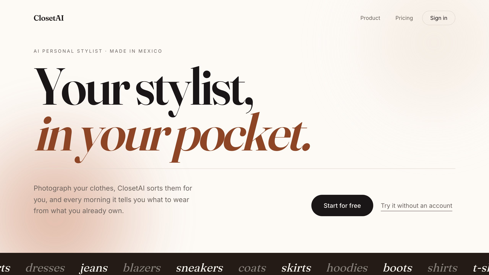
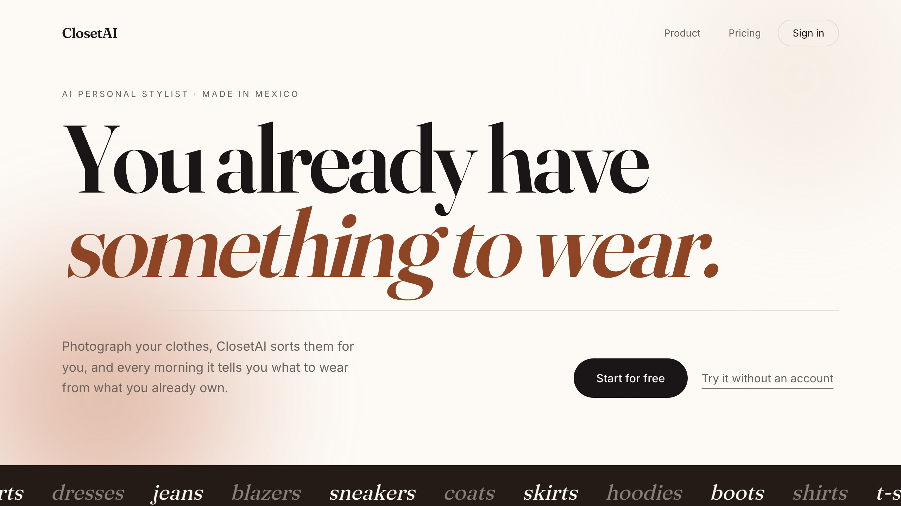
Below the headline the page reads as an argument: the problem, how it works in three steps, the data
with its source (linked to /research), the price — free forever or 100 pesos once, linked to
/pricing — and what happens to your photos.
Two sentences from the old homepage were removed because they could not be defended: «A las dos semanas ya no te propone lo que odias» was never measured, and «Diez prendas bastan para empezar» contradicts the Week 2 interview, where the limit before getting tired was 40. A test checks they do not come back.
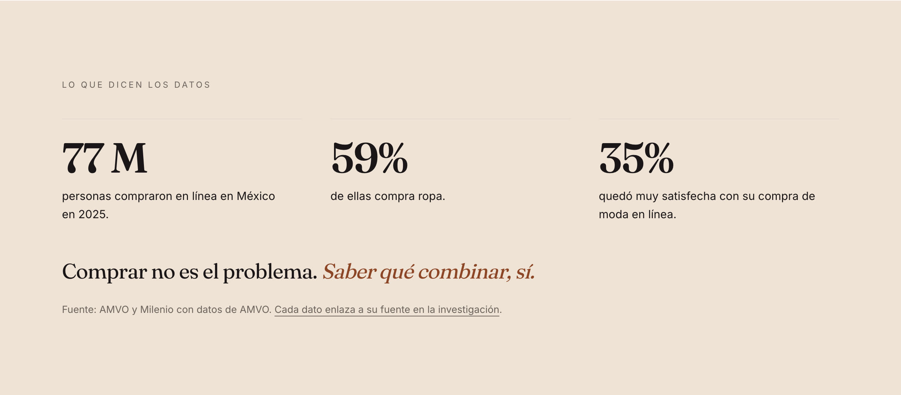
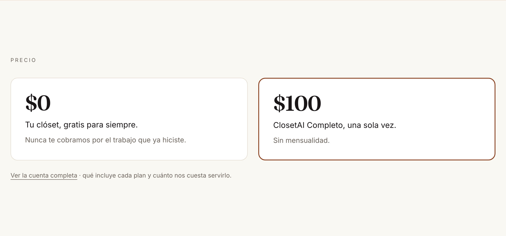
/pricing.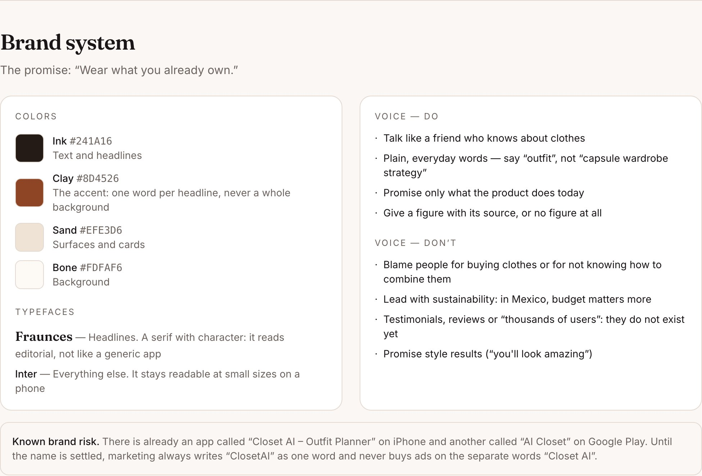
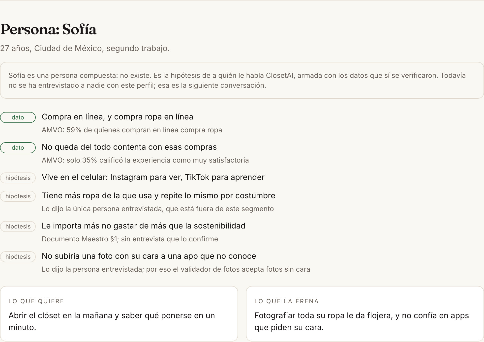
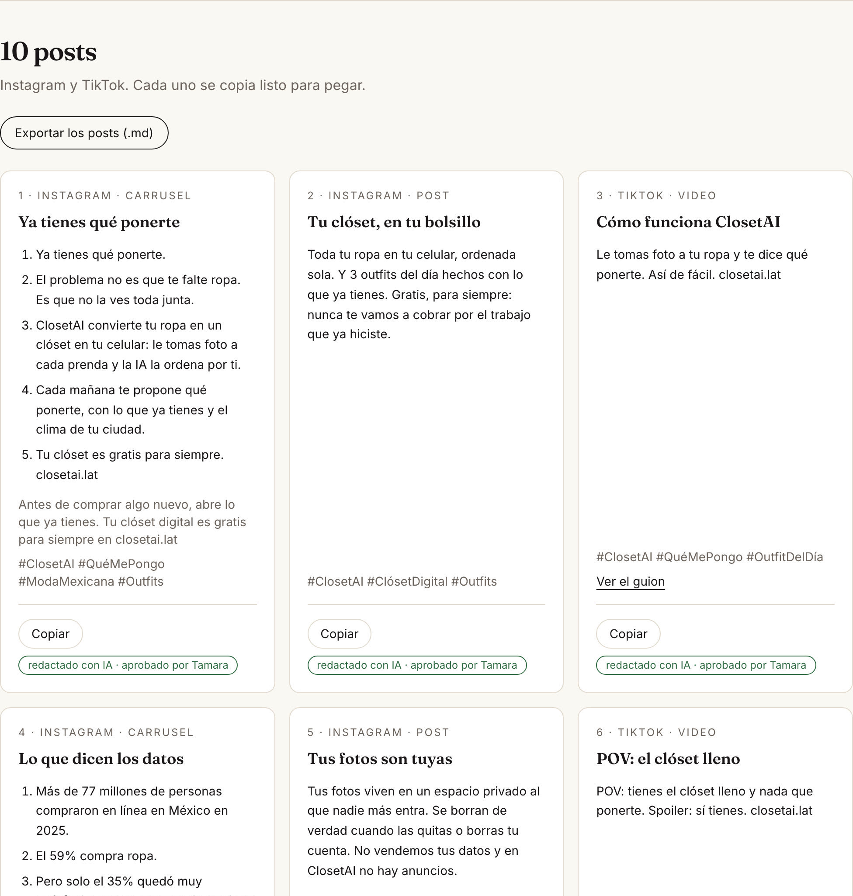
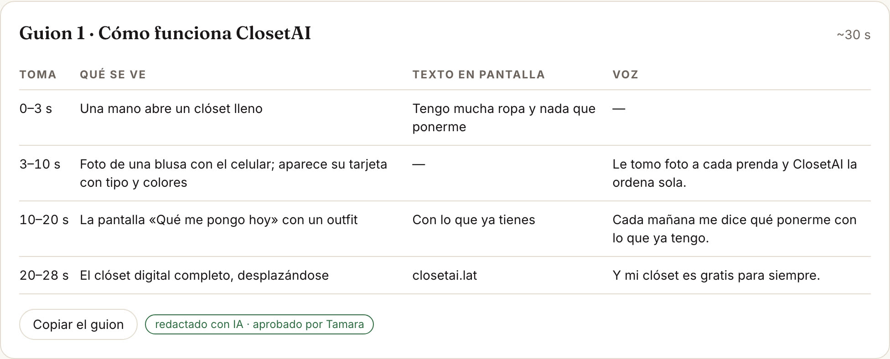
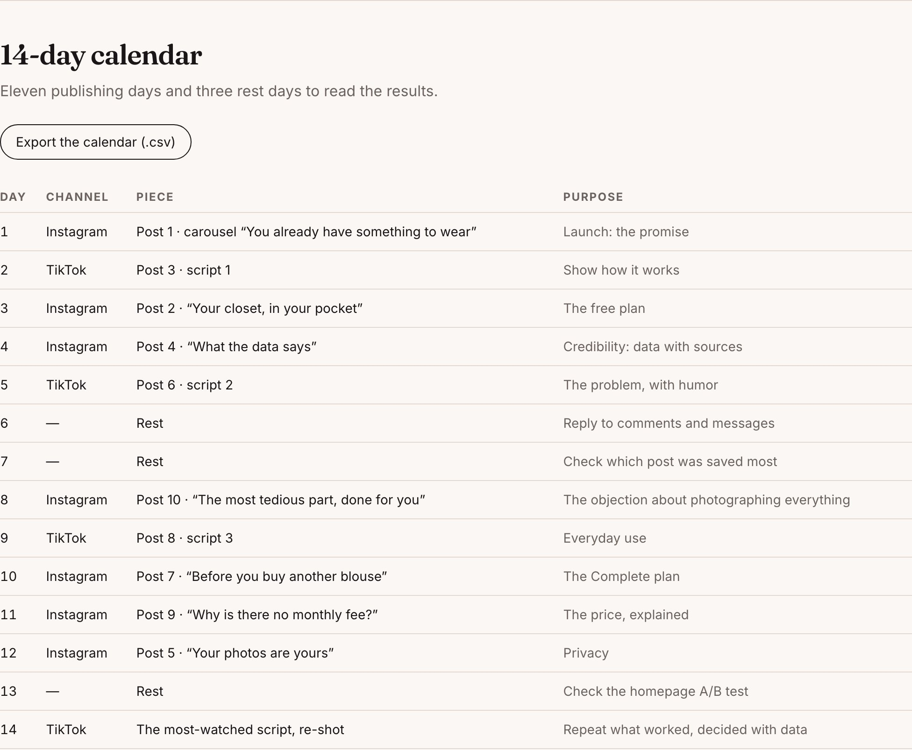
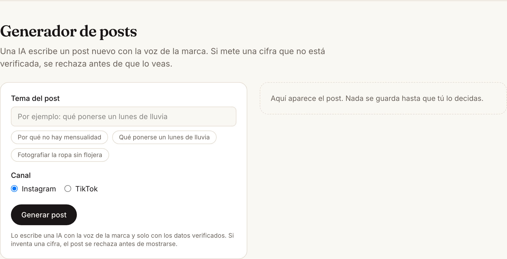
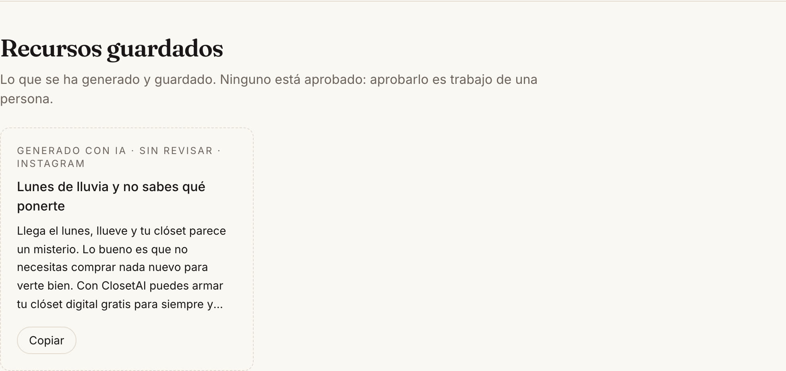
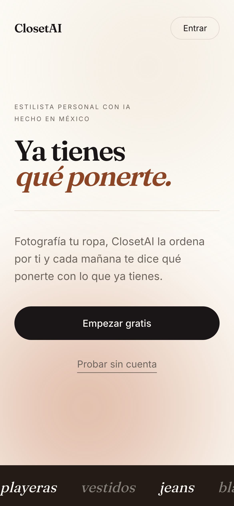
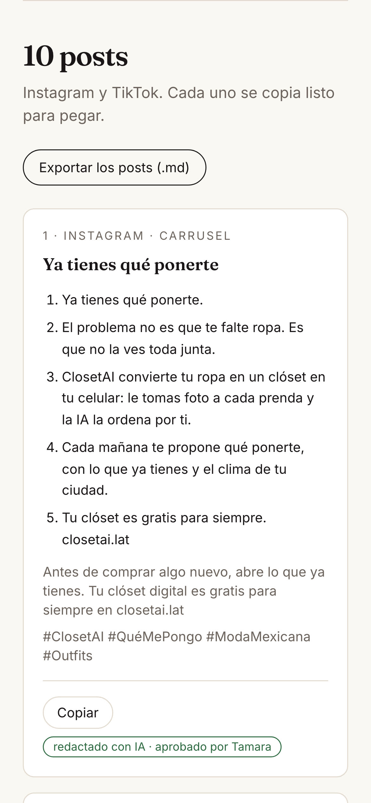
/marketing on a phone. Zero horizontal overflow on both.| Hash | When | Message |
|---|---|---|
| 660dc07 | Oct 21, 13:26 | docs: Build Discipline Packet and wireframe, before writing code |
| 060c841 | Oct 21, 13:31 | feat: the A/B logic, the facts marketing may use, and the content draft |
| 9f73646 | Oct 21, 14:26 | feat: marketing migrations and the approved content |
| 74fb66f | Oct 21, 14:28 | feat: the new homepage with the A/B headline, and /marketing |
| bbfe81d | Oct 21, 14:30 | fix: the headline was missing a space between its two lines |
| 2445f93 | Oct 21, 14:39 | test: tests against the real site, and the trap that prevented it |
| 8874da6 | Oct 21, 14:40 | fix: TikTok post text appeared twice |
| 07bdc32 | Oct 21, 17:19 | fix: the homepage closing repeated headline B |
| ce137cc | Oct 21, 17:24 | fix: the experiment counted automated browsers as visitors |
| bf135e6 | Oct 21, 17:51 | docs: diagnosis and cleanup of Vercel's screenshots in the experiment |
| a6a857c | Oct 26, 11:19 | docs: decision note approved by me |
| 126fa58 | Oct 26, 11:20 | fix: the decision note had been saved without its text |
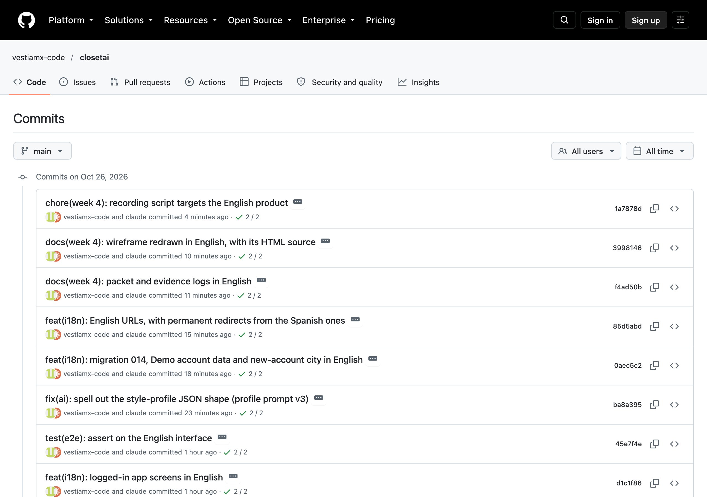
a6a857c, whose run was cancelled, not failed: the next commit — the fix for its own missing text — arrived 15 seconds later, and the workflow cancels a run when a newer one starts.All Production, all Ready, with exact times read from Vercel. One per commit.
| When | Status | What went out |
|---|---|---|
| Oct 21, 13:26 | ● Ready | The packet and the wireframe |
| Oct 21, 13:31 | ● Ready | A/B logic and the marketing guard |
| Oct 21, 14:26 | ● Ready | The migrations, before the code that needs them |
| Oct 21, 14:28 | ● Ready | The new homepage and /marketing |
| Oct 21, 14:30 | ● Ready | Fix: the space in the headline |
| Oct 21, 14:39 | ● Ready | Tests against the real site |
| Oct 21, 14:40 | ● Ready | Fix: duplicated TikTok text |
| Oct 21, 17:19 | ● Ready | Fix: the neutral closing line |
| Oct 21, 17:24 | ● Ready | Fix: robots no longer count as visitors |
| Oct 21, 17:51 | ● Ready | The diagnosis, documented |
| Oct 26, 11:19 | ● Ready | The decision note |
| Oct 26, 11:20 | ● Ready | The decision note, with its text |
Three migrations, each applied with my explicit permission, each loaded from the public repository and checked byte for byte before running, and each verified against the database.
| What was checked | Result |
|---|---|
| 010 — the SQL pasted is the one in the repository | sha256 619b08df…, 5,382 bytes |
ab_experiments | 1 row, with my two headlines |
ab_events with the public key | 401 — not readable from outside |
| 011 — generated from the approved document, not typed by hand | sha256 87eb7852…, 14,918 bytes |
marketing_assets after 011 | 28 rows: 1 homepage, 10 posts, 3 scripts, 14 days — all approved |
| The product map's unproven promise | Removed: “funciona sin que salga tu cara” is gone |
| 012 — the neutral closing line, in the database too | sha256 d7c7719a…; old line gone, new line present |
Migration 011 is generated by scripts/contenido-semana-4.py from
docs/evidencia/MARKETING-WEEK-4.md, the document I approved. What reaches the database
is exactly what I approved, and if the content changes, the migration is regenerated instead of edited
in two places.
Full log in docs/evidencia/PROMPT_LOG.md.
1 · Four brand decisions before the plan
“Now let's do this week's work.”
MY JUDGMENT. My brand headline against a customer's own words.
2 · The packet, before the code
“Write the Build Discipline Packet for the homepage and /marketing and commit it before touching code.”
MY JUDGMENT. Do not assign the variant where the session lives.
3 · The A/B logic, alone and tested
“Hash assignment and a two-proportion z-test, as pure functions. Two tests: fair split, no fake winner.”
MY JUDGMENT. An independence test nobody asked for found a real bug; the hash was fixed, not the test.
4 · Marketing that cannot invent numbers
“A closed list of verified facts with their source, and a guard that rejects any figure outside it.”
MY JUDGMENT. A post with an untested promise was withdrawn instead of asking me for a photo of my body to test it.
5 · The homepage and /marketing
“The homepage as an argument with the A/B headline; /marketing with brand, persona, content, copy and export, results and the generator.”
MY JUDGMENT. Two sentences on the old homepage could not be defended; they were removed.
6 · Test against the real site, for real
“Three software tests against production — and one that proves real visits ARE counted, not only that test visits are not.”
MY JUDGMENT. When a failure report showed the suite had been running against my laptop, the correction went into the document instead of being hidden.
src/lib/ab.test.ts)| What it asserts | Result |
|---|---|
| The same visitor always sees the same variant; 10,000 visitors split between 48% and 52% | ● pass |
| Two simultaneous experiments are independent (they agree between 47% and 53% of the time) | ● pass — found a real bug |
| Automated browsers, crawlers and link previews are discarded; a phone and a laptop are not (2 cases) | ● pass |
| What it asserts | Result |
|---|---|
| 30 visitors per side, 10% vs 40%: no winner — it looks decisive and is not | ● pass |
| Enough sample but a small difference: no winner | ● pass |
| 10% vs 20% with 500 per side: B wins; reversed, A wins | ● pass |
| The p-value matches a z-test worked by hand (z = 1.963, p = 0.0497) | ● pass |
| The minimum sample is 100, the number the page states | ● pass |
Watched failing on purpose: with the assignment fixed to “a”, the split and independence cases go red; with the minimum sample lowered to 10, the “no winner” cases go red. All green again on revert.
src/lib/marketing.test.ts) — 11 casesLets through the verified figures written the way a person writes them; catches “3 de cada 4”, “80%”, “10,000 usuarias” and “#Top10Outfits”; reads thousands and decimals as one number; every fact has a source; rejects broken or incomplete output; exports the calendar in order with commas escaped; and does not duplicate a video post's text. All approved content went through the same guard before being seeded.
e2e/marketing.spec.ts)| # | What it asserts | Result |
|---|---|---|
| 1 | /marketing loads with no session: 10 posts, 3 scripts, 14 days; the persona has data and hypotheses | ● pass |
| 2 | The calendar exports a CSV with a header and 14 rows; copying post 1 puts its text on the clipboard | ● pass |
| 3 | The homepage shows one headline, with its space, the same across reloads; test traffic leaves no events | ● pass |
| 4 | A real visit is counted: one view despite reloads, one click, same variant — then it deletes its own events | ● pass |
| 5 | The generator writes a post with no invented figures and saves it as “not reviewed” | ● pass |
| 6 | The homepage has the seven sections in order; nothing outside the headline repeats a variant; the two removed sentences did not return | ● pass |
Tests 3 and 4 only mean something together: test 3 alone would also pass if the counter were broken and counted nothing. [PENDING: final run]
| What was found | What changed |
|---|---|
The independence test: two experiments agreed 0 times in 10,000. With fnv1a % 2 the last bit is the parity of the letters, so experiments with names of different parity were perfect opposites | MurmurHash3's finalizer after FNV-1a, taking the top bit. The 50/50 split test had passed anyway — it would never have shown on screen |
| The old homepage claimed two things that could not be defended | Removed; a test checks they do not return |
| The product map (since Week 3) and a draft post promised the try-on works without your face. Never tested | The photo validator now accepts photos without a face; the post was replaced; migration 011 removed the promise. Testing it would have required a photo of my body just to publish a sentence |
| The headline's plain text was «Ya tienesqué ponerte» — no space between its two lines, since Week 0 | A space between the lines; the test requires it. That is how screen readers and search engines read it |
| TikTok post text appeared twice, on the page and when copied | Body and caption compared before joining; a unit test |
| The homepage closing repeated headline B | A neutral line I approved, in the page, the document and the database |
| The test suite was not running against production (§15) | pnpm test:e2e:prod, and every run prints its target |
| Vercel's screenshots counted as visitors: 10 views in pairs, one pair 26 seconds after a deployment. Each test run alone was ruled out first, counting before and after | Automated traffic is discarded and only its category logged. Confirmed on the next deployment: exactly two discards, no new events. The 10 fake views were deleted with my permission |
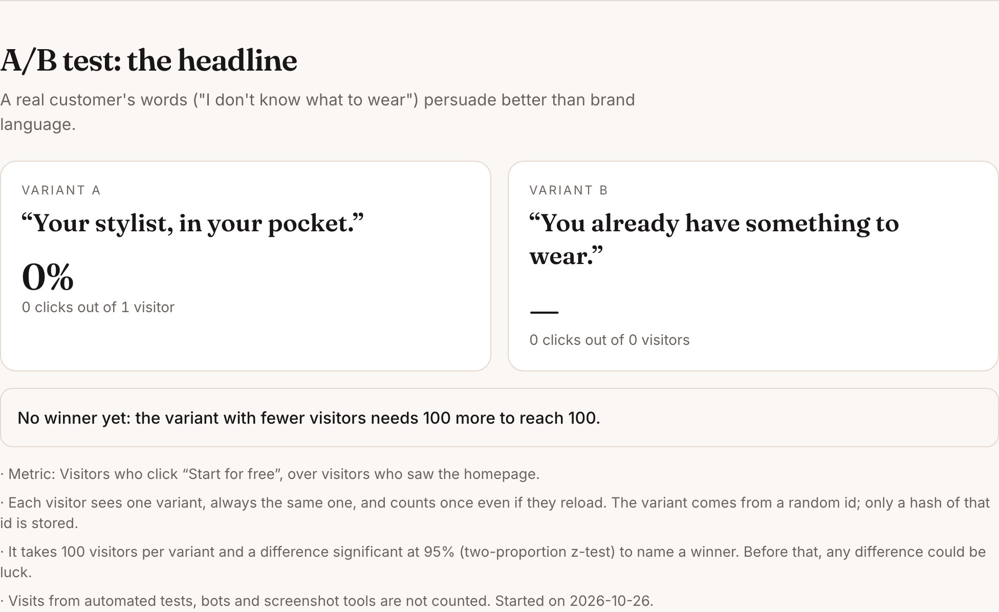
/marketing.[PENDING: numbers on submission day]
It needs 100 visitors per headline and a difference significant at 95% before naming a winner. Until then, the page says “no winner yet” instead of showing a percentage that looks like a decision and is really noise. Publishing the method without a fake winner is the honest result for one week of traffic.
A failure report this week showed a “Next.js Dev Tools” button, which only exists on a development
server. The reason: without PLAYWRIGHT_BASE_URL, Playwright goes to localhost:3000,
and a development server had been running on my laptop since September 2, which Playwright reused
silently. That server uses the production database, so everything looked real, but the site under test
was the local code.
So the end-to-end runs I described as “against production” on September 25 (Week 2's re-verification) and during Week 3 were not. The features were confirmed this week against the real site — research, pricing, homepage and marketing together, 47 of 47 — but the claim at the time was not proven. The Week 3 document cannot be changed after submission, so the correction is here.
2:32, recorded against the live site with the test header — so recording it added no visits to the experiment — and hosted on the product's own domain: closetai.lat/demo/semana-4 [PENDING: my narration]
In order: headline A and headline B for two visitors; the homepage argument; /marketing with the
brand, the persona and the live A/B results; the posts and a copy; the scripts and the calendar export;
the generator writing and saving a new post; and the commit history.
This week I had to market a product, and the hardest part was not saying more than I can prove.
I chose to test my own brand headline, "Tu estilista, en tu bolsillo", against a phrase that comes from a real customer: "Ya tienes qué ponerte." I would rather learn which one works than keep the one I like.
I rejected a post that said the virtual try-on works without your face. It had never been tested, and checking it meant uploading a photo of my body just to publish one sentence. I removed the post and corrected the product page, which had made the same promise since week three.
I also corrected three mistakes. My tests had not been running against the live site since September; now they are, and they pass. Vercel's screenshots after every deployment were counting as visitors in my experiment; I filtered them and deleted ten fake visits. And the closing line of the homepage repeated headline B, so people in group A were reading it too.
The tradeoff: my experiment will probably not have a winner by the deadline. It needs a hundred visitors per headline, so the page says "no winner yet" instead of showing a percentage that looks like a decision and is really noise.
213 words · approved by Tamara Muñoz Delgadillo, October 26, 2026
| Gate | Required | Evidence |
|---|---|---|
| 1 — Plan | Build Discipline Packet complete before coding | §2 · 660dc07, five minutes before the first code commit |
| 2 — Build | Code, commits and deploys completed | §8 · [PENDING: n] commits · §9 · [PENDING: n] production deployments |
| 3 — Test | Tests documented, bug fixed, redeploy completed | §12–13 · eight defects and corrections, each fixed and redeployed |
| 4 — Explain | Demo and human decision note submitted | §16 · 2:32 video · §17 · 213 words |